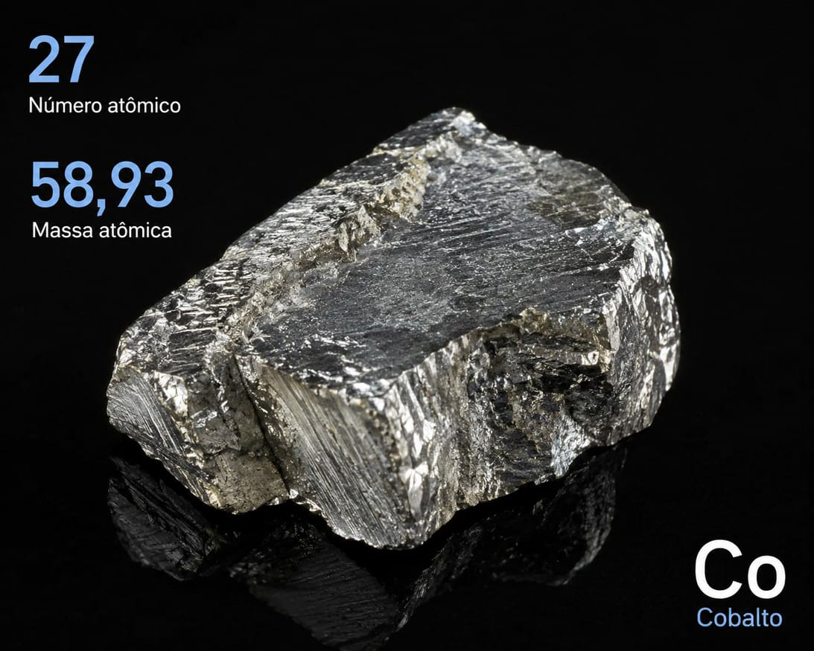

Cobalto (Co)
Elemento 27 da tabela periódica: o metal do azul cobalto e das baterias de íon-lítio.
Principais características
| Nome e símbolo | Cobalto (Co) |
|---|---|
| Estado físico | Sólido à temperatura ambiente |
| Aparência | Metal duro, cinza-prateado com um leve tom azulado, brilhante |
| Número atômico | 27 |
| Massa atômica | 58,933 u |
| Ponto de fusão | 1495 °C |
É um dos únicos três metais naturalmente magnéticos, junto com o ferro e o níquel, e continua magnético mesmo quando aquecido. Também resiste bem à corrosão.
História da descoberta
O cobalto já era conhecido desde a Antiguidade, usado para colorir vidros e cerâmicas de azul. Ninguém sabia que aquilo vinha de um elemento próprio: achava-se que a cor era do bismuto.
Foi isolado em 1735 pelo químico sueco Georg Brandt, a partir de um minério que os mineiros chamavam de kobold, "duende" ou "espírito das minas" em alemão. O minério era tido como amaldiçoado: ao ser fundido, não dava o metal esperado e ainda soltava vapores tóxicos de arsênico. Brandt extraiu um metal impuro e o chamou de "cobalto rex".
Só em 1780 Torben Bergman confirmou que aquilo era de fato um elemento novo.
Ocorrência na natureza
O cobalto não é encontrado livre na natureza, só combinado com outros elementos, principalmente nos minérios esmaltita, cobaltita e linneíta.
É apenas o 30º elemento mais abundante da Terra e quase sempre aparece junto com níquel, cobre e chumbo, sendo extraído como subproduto da mineração desses metais.
Os maiores produtores hoje são a República Democrática do Congo (cerca de 70% da produção mundial), a Indonésia, a Rússia e o Canadá. No Brasil houve uma mina em Niquelândia (GO), parada desde 2016.
Uso no cotidiano
- Baterias e eletrônicos: mais da metade do cobalto produzido vai para baterias de íon-lítio de celulares, notebooks e carros elétricos. O óxido de cobalto ajuda a armazenar energia de forma mais estável.
- Ligas metálicas: está na liga Alnico (alumínio, níquel e cobalto), usada em ímãs, e em ligas com cromo e tungstênio para ferramentas de corte e motores de turbina, que aguentam temperaturas altas.
- Pigmentos: o óxido de cobalto é há muito tempo o pigmento do "azul cobalto" em cerâmica, vidro e tinta.
- Equipamentos médicos: aparece em próteses de quadril e joelho, implantes dentários e aparelhos de radioterapia e ressonância magnética.
- Agricultura: é adicionado a fertilizantes e à ração de bois e ovelhas, porque as bactérias do estômago desses animais precisam dele para produzir vitamina B12.
Importância e riscos
Em quantidades muito pequenas, o cobalto é essencial: fica no centro da molécula de vitamina B12, importante para a produção de energia e de DNA. O corpo humano tem só cerca de 1 miligrama, vindo principalmente de laticínios e carne.
Economicamente, ganhou peso com os carros elétricos. A tecnologia de bateria de íon-lítio com óxido de cobalto rendeu até o Prêmio Nobel de Química de 2019.
Por outro lado, em doses altas o cobalto é cancerígeno, e a extração histórica dos seus minérios liberava vapores tóxicos de arsênico. Por isso, o manuseio de compostos de cobalto em laboratório ou na indústria exige equipamento de proteção.
Imagem do Cobalto
